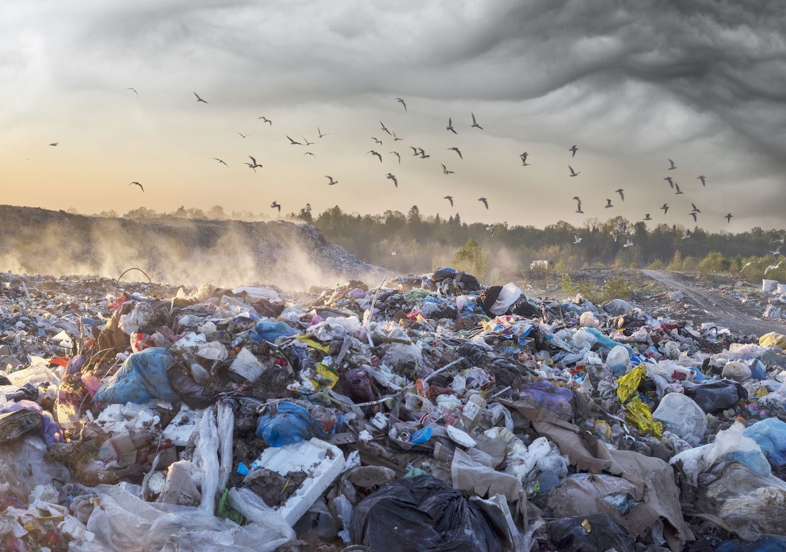
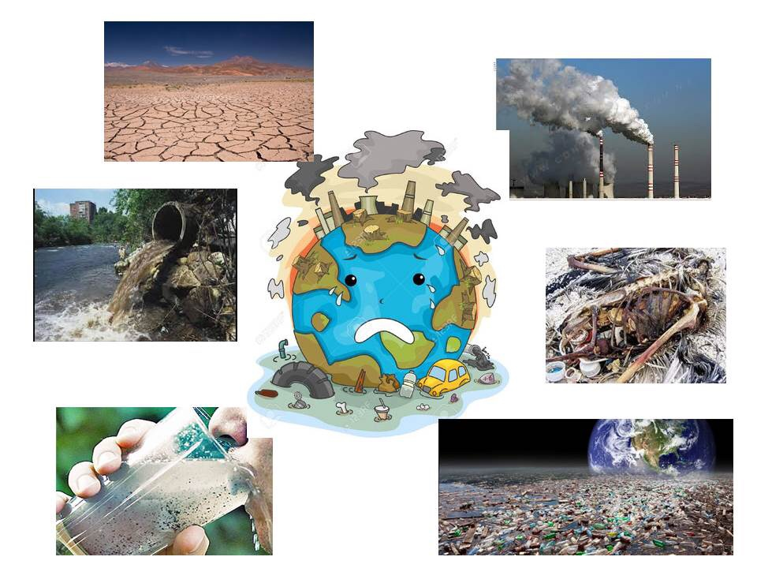

La contaminación ambiental o polución es la introducción de sustancias u otros elementos físicos en un medio, que provocan que este sea inseguro o no apto para su uso. Se denomina contaminación ambiental a la presencia de componentes nocivos (ya sean químicos, físicos o biológicos) en el medio ambiente (entorno natural y artificial), que supongan un perjuicio para los seres vivos que lo habitan, incluyendo a los seres humanos. La contaminación ambiental está originada principalmente por causas derivadas de la actividad humana, como la emisión a la atmósfera de gases de efecto invernadero o la explotación desmedida de los recursos naturales.
Atendiendo al lugar o entorno específico en que ocurre la contaminación y se producen los efectos nocivos, es posible clasificar la contaminación ambiental de la siguiente manera.
Las causas de la contaminación ambiental son, en su gran mayoría, consecuencia de las actividades humanas y del modo de vida postindustrial de nuestras sociedades.
Contaminación híbrida
La contaminación híbrida, o del agua, está generalmente provocada por el ser humano, que la vuelve impropia o peligrosa para el consumo y su uso en la industria
